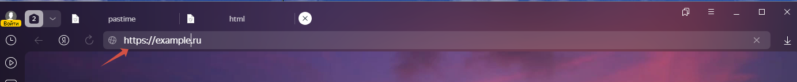

Содержание:
Домен
Регистрация домена
Домен (доменное имя) — это адрес сайта. Его набирают в браузере в поиске, чтобы найти нужный сайт или вводят в адресную строку, чтобы сразу перейти на сайт.

Каждый сайт имеет свой IP-адрес — набор цифр, например, 185.199.108.153, который определяет его местоположение на сервере. Но запоминать цифры неудобно, поэтому были придуманы доменные имена. Система DNS (Domain Name System) сопоставляет символьные имена с IP-адресами, позволяя легко находить нужные сайты. В браузере вы увидите его в адресной строке. Адрес сайта в браузере может выглядеть как https://example.ru или https://www.example.ru. Домен здесь — example.ru. Префикс https:// — не домен, а обозначение протокола передачи данных. Структура доменного имени организована по иерархическому принципу и состоит из нескольких частей, разделённых точками. Например, полное доменное имя schern.ru состоит из непосредственного имени домена (schern) и доменной зоны (.ru), разделённых точками. Доменное имя состоит из нескольких частей-уровней, разделенных точками. Вот как это выглядит на пример third.second.first.com: .com — домен верхнего уровня, показывает принадлежность к определенной зоне; first — домен второго уровня, главная часть адреса, обозначает название и тематику сайта; second и third — домены третьего уровня (поддомены), используются для обозначения разделов или служб сайта. Самый высокий уровень — корневой домен. Он находится в конце и обозначается точкой, но сама точка не пишется. За корневым следуют домены верхнего уровня — национальные (.ru, .uk) или общие (.com, .org). Далее идет основная часть адреса — домен второго уровня. Он должен быть уникален в пределах своей зоны. Поддомены третьего и так далее уровней задает владелец для удобства структурирования сайта
Зарегистрировать домен можно ...
Регистраторы
Итак....
Хостинг
Итак....
GitHub Pages
Итак....